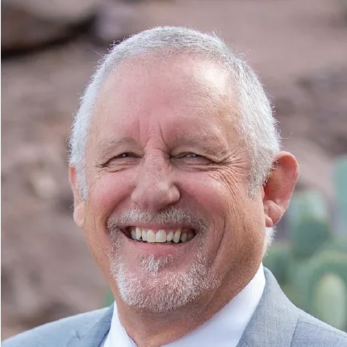

Brain wellness and counseling in Henderson, Nevada
Train your mind like you train your body.
Brain wellness sessions and counseling from a practice led by a doctoral-level licensed counselor with more than 25 years of experience. For calm, focus and recovery when the pressure is on.
- Doctorate in professional counseling
- More than 25 years of experience
- Private and confidential
- Henderson, NV, with telehealth in Nevada, Utah and Idaho
Who we help
Focus and performance
Staying composed under pressure, recovering well and keeping a clear head. All with complete discretion.
Focus and performanceCognitive health and vitality
For adults who want to stay calm, clear and confident as they age, and for the families who want a trusted guide.
Cognitive health and vitalityTherapy and counseling
Focused, trauma-informed care for stress, life changes and patterns that keep repeating. Specialized PTSD therapy for first responders, veterans and anyone living with the effects of a hard experience.
Therapy and counselingHealthcare professionals
Referrals, case consultation and a clinical partner for providers and first responder agencies.
For healthcare professionals
How it works: 2 Pathways
-

Pathway 1: Start with Dr. Sharp
Private consultation. Meet Dr. Sharp, in person or by telehealth.
Your personal plan. He recommends what fits: NeuralChek and BrainTap sessions, therapy, or both.
Your sessions. BrainTap sessions are guided by a certified associate in our Henderson office.
-
Pathway 2: Start with NeuralChek
NeuralChek reading. A certified associate guides a five-minute heart rate variability reading.
Review your results. We walk you through what your reading shows about how your body handles stress.
Your first BrainTap session. If it’s a good fit, a certified associate helps you choose a session and guides you through 20 to 30 minutes of deep relaxation.
BrainTap and NeuralChek
Constant stress keeps your body’s fight-flight-freeze response switched on. Over time, that can wear on your focus, your mood and your energy.
BrainTap gives you a structured way to step out of that state: a guided session of deep relaxation that helps your brain and body recharge. NeuralChek is a brief heart rate variability (HRV) reading that shows how your body is handling stress.
Every first visit includes a short safety screening.
Learn about NeuralChek and BrainTapA note from Dr. Sharp

Read about Dr. Sharp’s approachBrain wellness technology is a fast-growing area of care. After more than 25 years in this work, I’ve learned there is no one-size-fits-all. If a tool isn’t right for you, I’ll tell you, and I’ll tell you what is.
Start with a conversation
Tell us a little about what you’re looking for. We’ll be in touch within one business day.